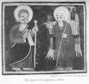

The Kebra Nagast, by E.A.W. Budge, [1922], at sacred-texts.com
21. CONCERNING THE QUEEN OF THE SOUTH
And how this Queen was born I have discovered written in that manuscript, and in this manner also Both the Evangelist mention that woman. And our Lord Jesus Christ, in condemning the Jewish people, the crucifiers, who lived at that time, spake, saying: "The Queen of the South shall rise up on the Day of Judgment and shall dispute with, and condemn, and overcome this generation who would not hearken unto

Click to enlarge
Plate IV. The Angel of God appearing to Moses.
{kind=link}
the preaching of My word, for she came from the ends of the earth to hear the wisdom of Solomon." 1 And the Queen of the South of whom He spake was the Queen of Ethiopia. And in the words "ends of the earth" [He maketh allusion] to the delicacy of the constitution of women, and the long distance of the journey, and the burning heat of the sun, and the hunger on the way, and the thirst for water. And this Queen of the South was very beautiful in face, and her stature was superb, and her understanding and intelligence, which God had given her, were of such high character that she went to Jerusalem to hear the wisdom of Solomon; now this was done by the command of God and it was His good pleasure. And moreover, she was exceedingly rich, for God had given her glory, and riches, and gold, and silver, and splendid apparel, and camels, and slaves, and trading men (or, merchants). And they carried on her business and trafficked for her by sea and by land, and in India, and in ’Aswân (Syene).
Footnotes
17:1 Matthew xii, 42; Luke xi, 31.